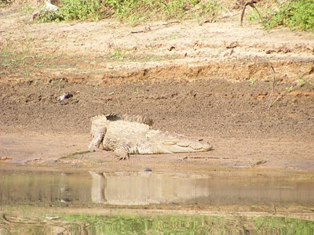
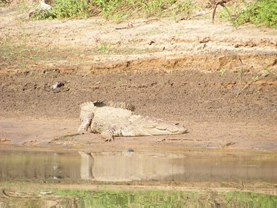

The term eco-tourism refers to eco-friendly nature based tourism for nature lovers with enduring passion to admire and enjoy life at its natural best. Different from Mass tourism and luxury tourism, Ecotourism is promoted to conserve nature for the welfare of living beings. It is not about watching nature and deriving pleasure from it, rather it is feeling nature, caring for it and spreading mass awareness.
Situated on the eastern coast of the country, Odisha is rich in minerals. Gifted with a bountiful wealth of nature, certain definite measures have been taken for the benefits of local people.
Bhitarkanika National Park Is the second largest mangrove forest in the world (the Sundarbans at top billing) and a Ramsar Wetland of International Importance. Bhitarkanika (literally extraordinarily beautiful interior) extends over 800 square km; a tangled web of forest covers half, the other a vast and complex network of estuarine waterways. The park is home to over 215 species of birds including winter migrants from Central Asia and Europe and a diverse range of wildlife, most notably the elusive saltwater crocodile and fragile Olive Ridley turtles. The majestic mangroves are best navigated by boat – be sure to keep your hand out of the waters!
Best Season: Winter (Nov – Feb) is the most comfortable period with average temperatures from 15°C to 25°C. The area is prone to fluctuating tides during the beginning of summer and winter. In monsoon the area is transforms into an astonishing waterscape.
Chilika Lake Asia’s largest estuarine water lagoon covers an area of 1100 sq km. with aunique combination of salt and fresh water. Studded with small islands, the lake is separated from the Bay of Bengal by a narrow sandy ridge. Recognised as a Ramsar Wetland of International Importance for its biodiversity, Chilika Lake attracts an impressive array of bird life, with over a million migratory waterfowl and shorebirds spending the winter here. It is also home to a diverse range of aquatic life, including 225 species of fish and the playful Irrawady dolphin. Most of all it’s the wide-open spaces and silence we enjoy. Not to mention magnificent sunsets!
Best Season: For bird-lovers, Chilika is best visited in winter (Nov – Feb) when the migratory populations wing in from places as far as Siberia.

Eastern Ghats Along India’s eastern coast, parallel to the Bay of Bengal, the Eastern Ghats mountain range stretch from West Bengal in the north, through Odisha and Andhra Pradesh to Tamil Nadu in the south. The Eastern Ghats are older than the Western Ghats. The region boasts extremely fertile soil rich in precious minerals and a complex geologic history, related to the assembly of Gondwana. In Odisha the Eastern Ghats reach their greatest height along the border with Andhra Pradesh. Thereafter eroded and cut through by the almighty Mahanadi River, the Ghats plateau into the surrounding plains.
Satkosia Gorge & Wildlife Sanctuary One of the most picturesque santuaries in Odisha. The almightly River Mahanadi (literally 'great river') cuts across the rolling Eastern Ghats form a magnificant 22 km long gorge. Satkosia sanctuary spans 800 sq.km of deciduous forest and peninsular sal. It hosts a Gharial Research and Conservation Unit and is home to the tiger, leopard, elephant, gaur, sambar, spotted deer, antelope and numerous resident birds.
Best Season: (Nov – Jan) Spring (Feb – Apr) is magic with flowers in bloom and birds busy nesting. Winters are cool with temperatures dropping as low as 10°C in some parts.
 

Nandan Kanan means '"garden of pleasure", and this combination of zoo, botanical garden and sanctuary 20 km from Bhubaneswar, in the splendid environs of the Chandaka Forest, along the rippling waters of the Kanjia lake, fits the description.
The zoo has created history in many ways. In 1967, a wild female tiger approached Nandan Kanan, and scaling a high fence, she crept around until she found the tiger enclosure. She then climbed up a concrete wall, and leapt down into the enclosure, thus perhaps becoming the only wild animal in existence who has ever opted to join in a zoo.
In addition to the white tigers, endangered species such as the Asiatic Lion, three Indian crocodilians, sanghai, lion tailed macaque, Nilgiri langur, Indian pangolin, mouse deer and countless birds, reptiles, and fish have been breeding successfully here. There is also a successful Black Panther breeding programme. In all, over 67 kinds of mammals, 18 varieties of reptiles and 81 species of birds co-exist in the deeply forested boundaries of Nandan Kanan.
Nandan Kanan, with its Zoo, the beautiful Botanical Gardens, the lake, nature trails and facilities for amusement, is a definite must for all visitors to Odisha (Formerly Orissa).

Simlipal Thick and green forests, extensive grassy lands and meadows, cloud kissing peaks, precipitous and sparkling waterfalls, meandering rivers, roaring tigers and trumpeting tuskers, fleeing deer and flying squirrels, talking myna and dancing peacocks et al make Similipal a dreamland of Nature in the wilderness and an irresistible destination.
Several rivers like Budhabalanga, Khairi, salandi, Palpala, etc. originate from the hills and meander through the forest like veins and arteries in the body. many of them have formed cascading rapids and foaming falls before leaving for the plains. The panoramic view of the waterfalls at Barehipani (400 meters) and joranda(150 meters) are simply enchanting of fish, is found in abundance in most of the rivers.
Best Season: Similipal is usually open for visitors from the beginning of November till the onset of the monsoons.

Debrigarh Wildlife Sanctuary The pleasant environs of the Hirakud Lake supporting a mixed deciduous forest provide a natural habitat to a variety of wild life in the Debrigarh WildLife Sanctuary, which stretches across the Lohara and Debrigarh Reserve forests on the Barapahad hills in Baragarh district. The waterfalls tumbling down the hill sides during the monsoon and the proximity of the large Hirakud reservoir attract a number of tourists.
The tiger, leopard, sloth bear, chital, sambar, and nilgai inhabit this almost virgin forest. Besides, a host of resident and migratory birds such as the chousingha and the crested serpent eagle add colour to the landscape. The mugger crocodiles and freshwater turtles residing in large numbers add to the diversity of the reserve forest.
Enclosing the Kamgaon and Lakhanpur wild life ranges, Debrigarh is flanked by the Debrigarh, Jhagadabehera, Lambipalli and Mundakati villages.
Best Season: November-June.